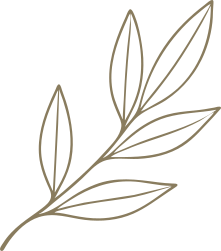
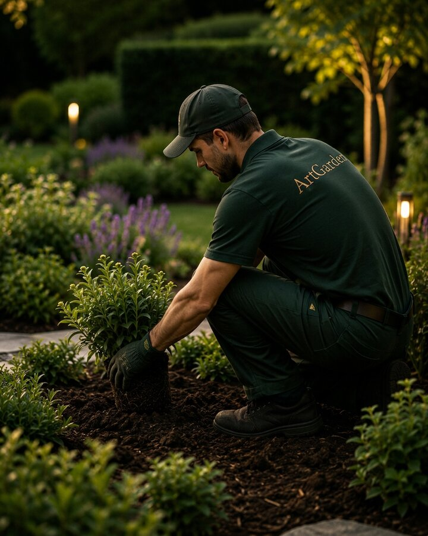

ArtGarden Design
Kertet tervezek,
értéket teremtek.

Köszöntelek az
ArtGarden Design világában.
Béki Zsolt vagyok, kertépítő és az ArtGarden Design alapítója.
Célom olyan időtálló és harmonikus kertek létrehozása, amelyek természetesen illeszkednek az otthonhoz és hosszú távon is valódi értéket képviselnek.
Számomra fontosak a letisztult részletek, a természetes arányok és az, hogy minden kerthez a megfelelő növényeket, anyagokat és technológiai megoldásokat alkalmazzam.
Egy jól megtervezett kert nemcsak szép látvány, hanem a mindennapok része – egy nyugodt, élhető tér, amely idővel sem veszít az értékéből.

IDŐTÁLLÓ
Olyan kerteket tervezek, amelyek évekkel később is természetesnek és harmonikusnak hatnak.
TERMÉSZETES
A természet ritmusához és az épített környezethez is illeszkedő megoldásokat alkalmazok.
HARMONIKUS
Letisztult részletek, átgondolt arányok és időtálló anyagok a nyugodt, élhető kertekért.